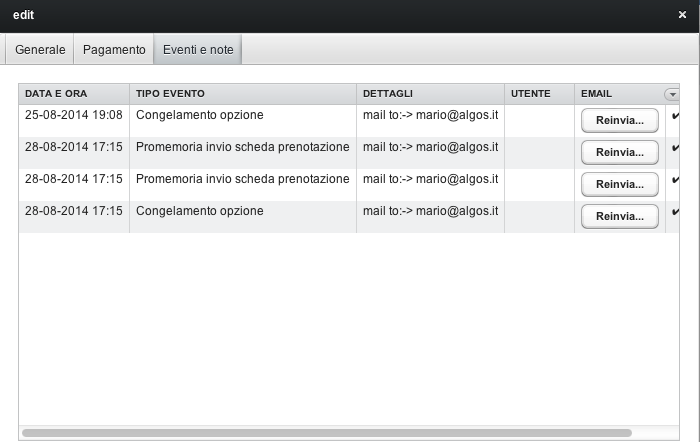

Tutti gli eventi rilevanti relativi a una prenotazione vengono registrati nel Registro Eventi della prenotazione.
Questo registro è accessibile dalla pagina Eventi della scheda Prenotazione

Gli eventi registrati possono essere di diverso tipo (conferma prenotazione, registrazione pagamenti, invio solleciti, congelamento opzione ecc...)
Per gli eventi che comportano invio di email, la email può essere reinviata tramite l'apposito tasto Reinvia.
Il registro eventi nella scheda prenotazione visualizza solo gli eventi relativi alla prenotazione stessa. Una lista globale di tutti gli eventi prenotazione è accessibile tramite la funzione Tabelle -> Registro eventi prenotazioni